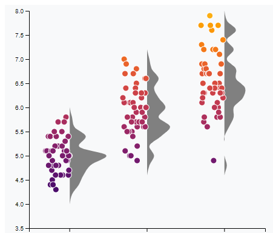

Mobility dropped dramatically within all states during the start of the COVID-19 pandemic.
Click on a line to activate tooltip for that state.
Mobility across states also dropped during the start of the pandemic.
States which issued lockdown orders experienced a greater mobility decrease than states which did not issue lockdown orders.

Decreases in mobility pre-empted lockdown orders in most states.
After the initial drop in mobility, many states saw mobility ramping back up prior to the end of the lockdown period.
Example: MA
A decrease in mobility is more a reflection of public sentiment rather than due to an enforced lockdown.
Check out mobility patterns for other states below.
Public health officials and policymakers should more carefully consider how factors other than mandated lockdowns, such as public health messaging, can influence mobility patterns.